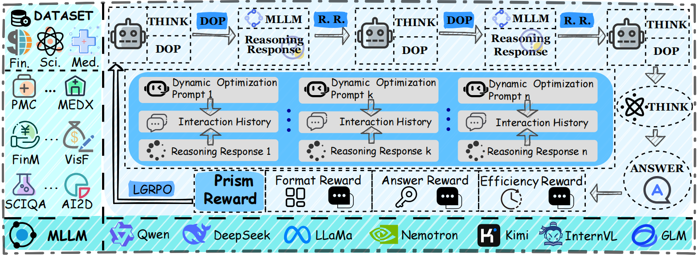
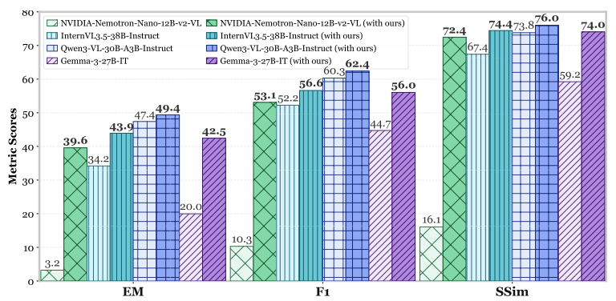
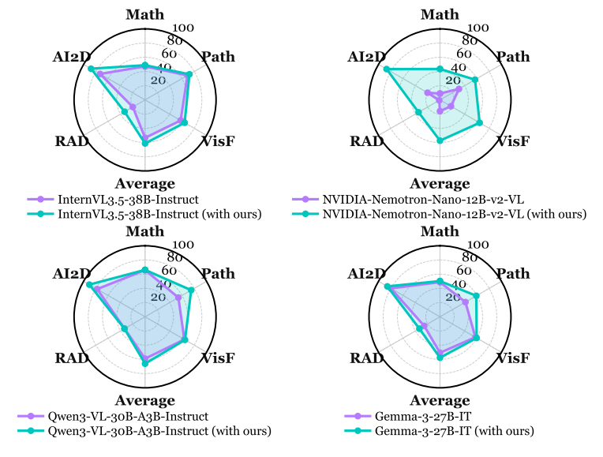

We introduce MMDynOpt, an end-to-end reinforcement learning framework that trains small-scale LLMs to act as dynamic multimodal agents. The agent learns when and how to query external multimodal LLMs, refine prompts, and aggregate evidence across multiple reasoning rounds. By leveraging GRPO (Group Relative Policy Optimization) with composite reward signals—format adherence, answer correctness (EM/F1), and inference budget penalties—MMDynOpt produces agents that achieve strong task-solving performance while maintaining computational efficiency. Experiments across 15 multimodal benchmarks spanning finance, medical, science, and math domains demonstrate consistent improvements over baseline approaches.

Figure 3: Overview of the MMDynOpt-Agent framework. A multimodal agent is trained via reinforcement learning to dynamically generate optimized prompts for MLLMs. DOP: dynamic optimization prompt. R. R.: reasoning response.
The agent learns to generate tailored prompts that elicit better reasoning from external multimodal LLMs, adapting its strategy across turns.
Through iterative querying and evidence aggregation, the agent progressively refines its understanding and produces more accurate answers.
A budget penalty in the reward function encourages efficient agent behavior, penalizing excessive LLM calls and token usage.
Format reward + answer correctness (EM/F1) + budget penalty form a unified RL objective that optimizes both quality and efficiency.

Figure 4: Comparison of average EM, F1, and SSim of 4 MLLMs with and without MMDynOpt-Agent on 9 training datasets.

Figure 5: Comparison of F1 scores of four unseen MLLMs with and without MMDynOpt-Agent on five OOD datasets.
15 multimodal benchmarks across 4 diverse domains:
| 💰 Finance | 🏥 Medical | 🔬 Science | 📐 Math & Vision |
|---|---|---|---|
| FinChart-Bench | MedXpertQA | ScienceQA | MathVista |
| FinMME | OmniMedVQA | GEOQA | MULTI-Benchmark |
| VisFinEval | PMC-VQA | SeePhys | AI2D |
| finance-QA-Vision | PathVQA | ||
| VQA-RAD |
@misc{mmdynopt2026,
title={MMDynOpt-Agent: Dynamic Optimization for Multimodal Large Language Model Reasoning via Reinforcement Learning},
author={Wenjin Liu and Haoran Luo and Fayuan Ke and Zhenghong Lin and Yue Lu and Zhe Cui and Anh Tuan Luu and Carl Yang},
year={2026},
eprint={2608.14026},
archivePrefix={arXiv},
primaryClass={cs.CE},
url={https://arxiv.org/abs/2608.14026},
}